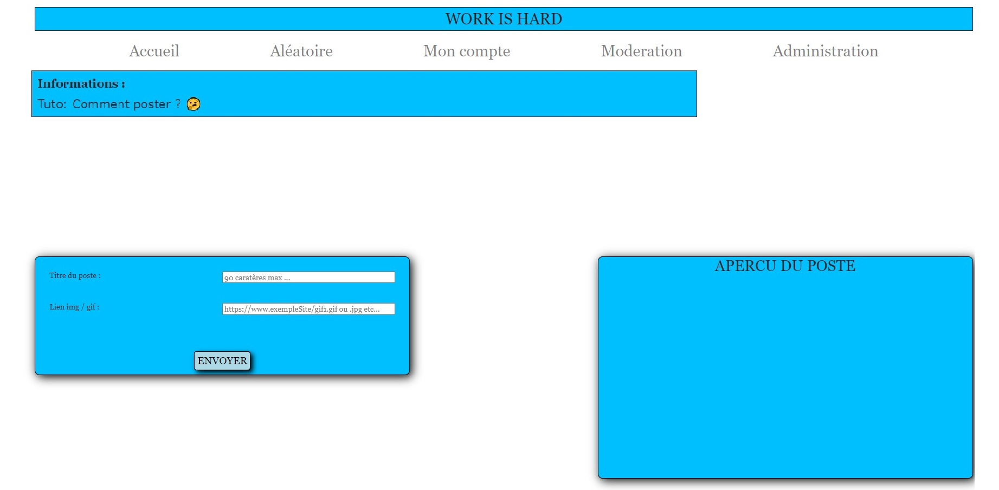

{% extends "heritageJinja/base.html" %}

{% block css %}
    <link rel="stylesheet" href="{{ url_for('static', filename= 'css/Aide.css') }}">

{% endblock %}

{% block title %}Administration{% endblock %}

{% block content %}
<div id="blocTitre">
    <h1 id="titreH1">BIENVENUE SUR L'AIDE</h1>
    <p class="paragrapheAide">Ici, vous retrouver un tutoriel sur le lieu et la manière de poster...<p>  
</div>


    <h2 class="titreH2Aide" id="OuPoster">📄<span class="textTitreAide">Où poster?<span></h2>
    <ul>
        <li>Pour soumettre un poste sur work is hard , vous devez en premier lieu vous inscrire ou avoir un compte.</li>

        <li>Une fois cela fait vous pouvez vous connecter afin d'accéder au bouton sur la page acceuil au bouton <span class="italiqueText">"poster"</span> <span class="TextGrey">(image 1)</span>.</li>

        <div class="blocImgAide">
            <a target="_blank" href="../static/img/tuto1.jpg"></a>
            <figcaption class="legendAide">Image 1</figcaption>
        </div>

        <li>Vous pouvez également utiliser le raccourci situé en haut à droite du site pour accéder à la création d'un poste où à votre déconnexion <span class="TextGrey">(image 2)</span>.</li>

        <div class="blocImgAide">
            <a target="_blank" href="../static/img/tuto2.jpg"></a>
            <figcaption class="legendAide">Image 2</figcaption>
        </div>

        <li>Une fois que vous avez validé l'une de ces 2 méthodes vous vous retrouvez alors sur la page <span class="italiqueText">"création de poste"</span> <span class="TextGrey">(image 3)</span>.</li>

        <div class="blocImgAide">
            <a target="_blank" href="../static/img/tuto3.jpg"></a>
            <figcaption class="legendAide">Image 3</figcaption>
        </div>

    </ul>


    <h2 class="titreH2Aide" id="CommentPoster">📄<span class="textTitreAide">Comment poster?</span></h2>

    <ul>

        <li>Si vous êtes ici, c'est certainement que savez déja où poster ou que avez lû la partie <a href="#OuPoster">du dessus</a>.</li>

        <li>Pour soumettre un poste il vous suffit sur la page création de poste d'entrer un titre dans le champs de la partie gauche <span class="TextGrey">(image 4-1)</span>.</li>

        <li>Un aperçu de ce que le titre du poste rendra sur le site apparaîtra au moment de votre saisie sur la partie de droite nommée <span class="italiqueText">"aperçu du poste"</span> <span class="TextGrey">(image 4-2)</span>.</li>

        <div class="blocImgAide">
            <a target="_blank" href="../static/img/tuto4.jpg"></a>
            <figcaption class="legendAide">Image 4</figcaption>
        </div>

        <li>Vous pouvez ensuite partager le lien de votre gif dans le champs situé en dessous.</li>
        
        <li>Le système à été conçu pour accueillir des liens sous le format suivant:<br>
            <span class="italiqueText">"https://example.site.com/media/PtdOBG0BD9Vvi/image.gif"</span>
        .</li>
        
        <li>Les <span class="italiqueText">".gif .jpg .jpeg .png"</span> sont actuellement pris en charge et sont crucials à l'aperçu et la soumission du post..</li> 

        <li>Nous ne garantissons pas que d'autres formats soient adaptés, c'est pour cela qu'es mis à disposition en pied de page des sites gratuits qui partage des gif avec ce format.</li>

        <li>Vous pouvez alors écrire le lien ou le coller de votre image/gif dans le champs en question, si cela réponds aux extensions demandé le champs devrait alors se verrouiller
        .</li> 

        <li>En cas d'erreur de format, de caractères manquants / supplémentaires, ou si le site ne parviens pas à chargé votre gif, aucun aperçu ne devrait apparaître dans la partie <span class="italiqueText">"apercu du poste"</span><span class="TextGrey">(image 5-3)</span>. Cela malgré le champs verrouiller <span class="TextGrey">(image 5-4)</span>.</li>

        <li>Si vous tentez de validé à ce stade un message d'erreur vous préviendra que le format est inaproprié <span class="TextGrey">(image 5-5)</span>. vous pourrez alors vous servir du bouton effacé pour de nouveau entrer un lien valide <span class="TextGrey">(image 5-6)</span>.</li>

        <div class="blocImgAide">
            <a target="_blank" href="../static/img/tuto5.jpg"></a>
            <figcaption class="legendAide">Image 5</figcaption>
        </div>

        <li>Dans le cas le champs <span class="italiqueText">"lien gif"</span> se verrouille <span class="TextGrey">(image 6-7)</span> et qu'un aperçu vous est proposer de votre image/animation dans la partie droite <span class="italiqueText">"aperçu du poste"</span> <span class="TextGrey">(image 6-8)</span>, cela confirme que votre lien est ok.</li>

        <div class="blocImgAide">
            <a target="_blank" href="../static/img/tuto6.jpg"></a>
            <figcaption class="legendAide">Image 6</figcaption>
        </div>


        <li>Vous pouvez alors valider votre poste pour que celui-ci puis-ce soit être intégré directement via le site ou soit passé par la modération (cela dépends du mode choisit par les administrateurs).</li>

        <li>Une page de transition apparaîtra alors, vous confirmant la création de votre et vous redirigera dans les 5 secondes vers l'écran d'acceuil. <span class="TextGrey">(image 7)</span>.</li>

        <div class="blocImgAide">
            <a target="_blank" href="../static/img/tuto7.jpg"></a>
            <figcaption class="legendAide">Image 7</figcaption>
        </div>
    </ul>


{% endblock %}


{% block js %}
    <!-- <script src="{{ url_for('static', filename= 'js/Aide.js') }}"></script> -->
{% endblock %}